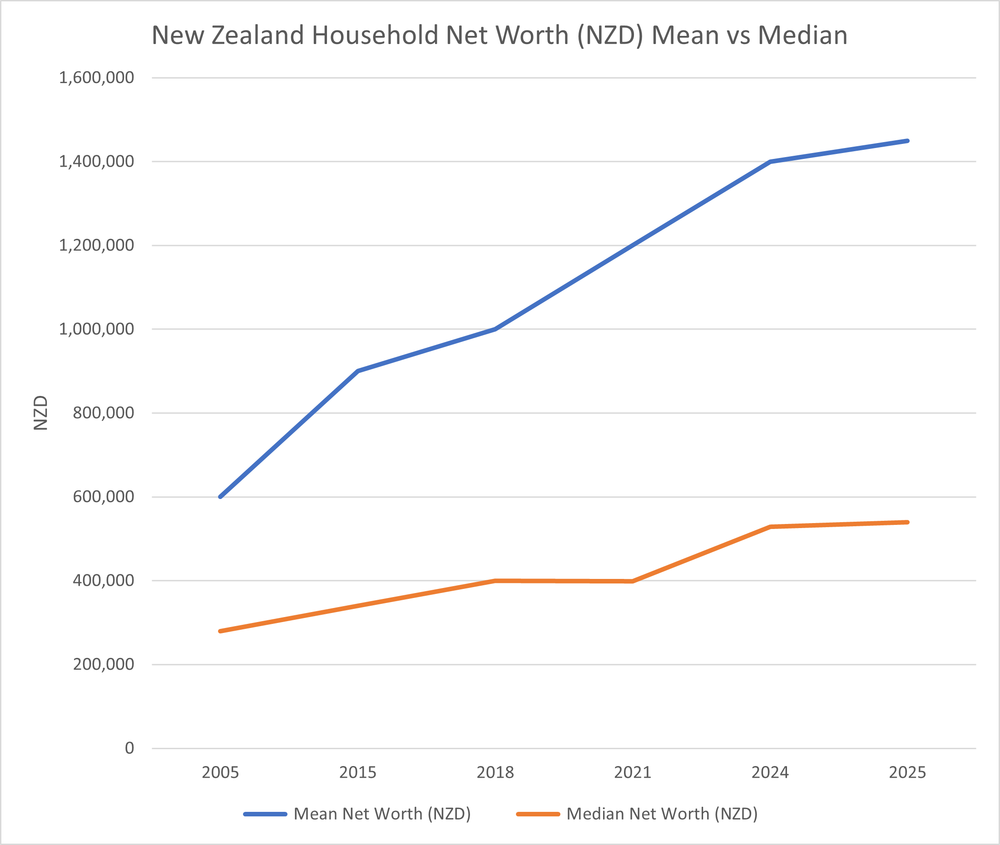

Posted: October 2, 2025
Average household incomes... eh? That doesn't sound like what it feels like
Listening to the Council meeting on 2 October, there was some discussion about the average household income statistic in Tairāwhiti; that it doesn't sound like what it feels like on the ground for most families.
It was a great point to raise by Councillor Rawinia Parata↗; she's right, high levels of income/wealth in some households skew the average up.
Average income statistics are unhelpful at best, seriously misleading at worst.
You might have heard me banging on and on about being in a system that's making most families poorer. You might have even rolled your eyes and thought what are you talking about, seems OK to me, I just bought a 70" TV.
But it's true; wealth increasingly accumulating at the top — where it often sits largely outside circulation in less-liquid, less-productive, lightly-taxed places — is increasingly making most families worse off, exactly as Cr Parata identifies in her communities.
Average household income statistics hide the reality that even when average household incomes increase year-on-year more families can be worse off than the year before.
Look at the median, not the mean
A useful, more meaningful statistic is median household incomes, or even better, median household net worth (wealth) — the wealth of the household in the middle. This is a harder stat to come by because it doesn't paint such a pretty picture.
New Zealand household average net worth is about THREE times higher than the household median net worth.

Sources: Stats NZ Household Net Worth Surveys, Reserve Bank of NZ Household Financial Statistics
Median household wealth is a third of the average household wealth. So what?
If the median is far below the mean, a small group holds a disproportionate share of wealth; i.e., it is a strong signal of wealth inequality. And looking at the chart above, that wealth inequality is increasing.
Wealth inequality is OK
Wealth inequality is normal and expected in our system.
Wealth inequality becomes an issue when that wealth doesn't recirculate and instead accumulates. It is why New Zealand has such stubbornly low rates of productivity.
Wealth begets wealth
In the system we have, without any measures, this wealth naturally accumulates at an increasing rate. For example, passive income (money for sitting there) on, say, $10m in wealth is about $10,000 a week. Of course, that's not all free cash flow, but it's already more than is ordinarily spent, so it's generally used to accumulate more assets.
The health of the economy for ordinary folk
In the last US election, there was a moan that the vibes were off, that the economy was growing but people were grumpy, not feeling it.
If we want to really understand how ordinary folk are doing, it's no good looking at GDP growth, or GDP per capita growth, or average income growth and assuming because it's going up, the economy is growing and people are better off.
To understand how ordinary folk are doing, we need to focus on median household incomes and wealth. And match that to the cost of household fundamentals like rent, mortgages, rates, energy, insurance, and food bills.
Other diary entries
- Final call: Vote like you mean it!
- Asked about the kiwifruit industry
- Briefly on climate change, and retail
- On council waste
- My council candidate video
- That not being on social media thing
- Podcast with Jack Marshall - Now That's an Idea
- TL;DR? Here's the 1 minute pitch
- How to vote
- Ways to support horticulture without a background in horticulture
- A good overview of my, and your other fave's, policy positions
- Bringing education, research, trusts, and industry together; and the problem with Joint Ventures
- A bit of motivation to make a start
- The homeless - what to do?
- Māori Wards - a union of Te Ao Māori and a struggling western democratic capitalism
- Insulation - a personal reflection on the Trust Tairāwhiti AGM